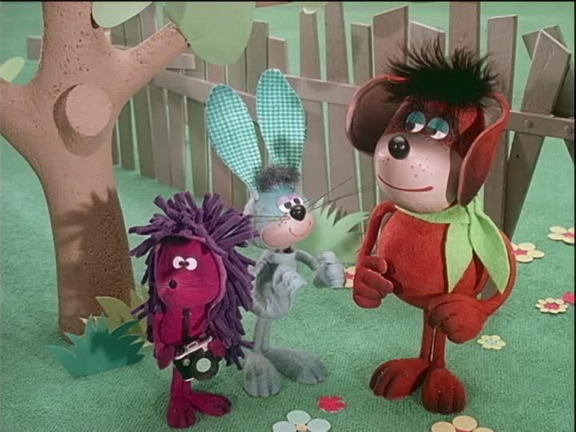

Minden link egy koppintással indít egy egész sort. A hosszak mérve vannak,
nem becsülve — az archívum saját adatából, illetve a videók tényleges játékidejéből.
Az archívumos részek ingyenesek, reklámmentesek, és nem az algoritmus választja a következőt.
A tévén: koppints a mesére — megnyílik a YouTube vagy a Disney+ app —,
majd a lejátszóban a ⌗ cast ikonra, és válaszd a nappali tévét.
A klasszikus, modellvasutas sorozat és a későbbi, teljesen számítógépes korszak, magyarul és angolul.
Az eredeti sorozatcímek szerint, nem összemosva.
Thomas, a gőzmozdony 1984–2003
magyar
17 rész4:30–5:38klasszikus
A David Mitton-féle modellvasutas sorozat magyar szinkronnal: S01E01 Thomas és Gordon, S02E01 Thomas, Percy és a szén, S03E03 Toby bajba kerül, és a 7. évad tizennégy része. Nem hivatalos feltöltések — hivatalos magyar forrás nem létezik.
A Thomas & Friends Classics hivatalos csatornájáról, az első évad szinte teljesen: Thomas Gets Tricked, Thomas Goes Fishing, Percy Runs Away, Toby the Tram Engine. Ringo Starr narrációjának kora.
A teljesen számítógépes korszak, a 13., 16. és 17. évadból: Double Trouble, Henry’s Good Deeds, Bust My Buffers!, Bill or Ben, The Thomas Way. Egész epizódok a hivatalos csatornákról.
Magyarul a CGI-korszakból jóval kevesebb van fent, és egyik sem hivatalos: Percy és a csokoládé, Cranky nem alhat, a 10. és 14. évad részei, valamint a 22. évados Nagy Világ! Nagy Kalandok!.
Betűrendben. A link a sorozatoldalt nyitja, onnan bármelyik rész indítható — ezt érdemes elmenteni,
mert az egyes epizódok azonosítói időnként változnak, a sorozatoldal marad.

A legkisebb Ugrifüles I. sorozat
Archívum
13 rész7:31–8:04I/6 · 12-es
Ugrifüles és Tüskéshátú világot lát. A 6. rész (A tüsszentő trafikosbódé) 12-es karikát kapott.
Betűrendben. A válogatásoknál a link egy azonnali lejátszási listát nyit: végigmegy magától.
A kockásfülű nyúl
YouTube
9 rész5:33–7:05nem hivatalos
Az archívumból eltűnt, hivatalos feltöltés nincs. Ezek spanyol és olasz címmel futó feltöltések — a sorozat viszont gyakorlatilag dialógus nélküli, úgyhogy a kép ugyanaz.
A klasszikus Hanna–Barbera sorozat magyar szinkronnal, a hivatalos csatornáról. Ebből a tízből kimaradtak a feszültebbek — azok lent, a figyelmeztetéseknél.
Kézzel szűrve: nincs köztük fejvágás, boszorkányégetés, megevett gida. A macskacicó, Méhek a vonaton, A rátóti csikótojás, A király kenyere és társaik.
Ezek nem rosszak, csak nem hároméveseknek valók — mind ellenőrzött, konkrét eset.
Hupikék törpikék: A lila törpök
Járvány-sztori: a megcsípett törpök dühös lila törppé változnak és harapják a többit.
A széria egyik legfeszültebb része.
Hupikék törpikék: Törpbosszú, A kísértetkastély
Páncélos lovagok eltapossák Aprajafalvát, illetve sötét kastély kísértetnek hitt hangokkal.
A feloldás mindkettőben megnyugtató, a felvezetés nem.
Mikrobi: Űrkalózok
Elrabolják Peppét. Ebben a korban az „elvitték a szülőktől” alaphelyzet a legerősebb félelem.
Süsü, a sárkány kalandjai: 5. és 8. rész
A pesztra: mindenki elmegy, fegyveres sereg támad a házra. Süsü csapdába esik: várostrom,
menetelő zsoldosdal, bezártság.
Süsü, a sárkány kalandjai: 1. rész eleje
A kitagadás 3–4 perce a kánon legnehezebb része — és nem azért, amire számítanál:
Süsüt azért zavarja el az apja, mert az ellenséget meggyógyította. Mellé kell ülni.
A legkisebb Ugrifüles: I/6
A tüsszentő trafikosbódé — az egyetlen rész az egész archívumos törzsben, ami 12-es karikát kapott.
Ami jelenleg sehol nincs
Vízipók-csodapók — ez az egyetlen, ami tényleg sehol: az archívumból eltűnt,
a YouTube-on pedig csak diafilm-feldolgozások vannak, valódi rajzfilm-epizód egy sem.
Mazsola és Tádé — a bábfilm nincs fent. Amit találni, az felolvasás
(Bálint Ágnes szövege hanganyagként), nem a báb sorozat.
Misi Mókus kalandjai — nincs epizódos forrás.
Thomas & Friends: All Engines Go (2021–) — a legújabb, 2D-s reboot magyarul a
Cartoonito csatornáján van fent, de csak rövid részletekben, teljes epizód nélkül. Ezért nincs külön listája.
Macskássy / Dargay rövidfilmek — az NFI katalogizálja őket, otthoni lejátszás nincs megoldva.
Süsüke, a sárkánygyerek (2001) — 13 rész, nincs hivatalos online forrása.